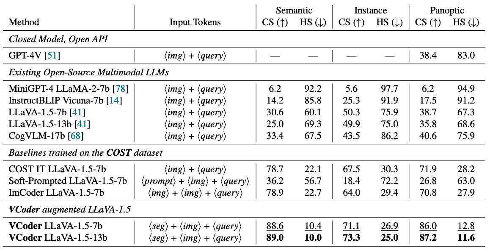

Humans possess the remarkable skill of Visual Perception, the ability to see and understand the seen, helping them make sense of the visual world and, in turn, reason. Multimodal Large Language Models (MLLM) have recently achieved impressive performance on vision-language tasks ranging from visual question-answering and image captioning to visual reasoning and image generation. However, when prompted to identify or count (perceive) the entities in a given image, existing MLLM systems fail. Working towards developing an accurate MLLM system for perception and reasoning, we propose using Versatile vision enCoders (VCoder) as perception eyes for Multimodal LLMs. We feed the VCoder with perception modalities such as segmentation or depth maps, improving the MLLM's perception abilities. Secondly, we leverage the images from COCO and outputs from off-the-shelf vision perception models to create our COCO Segmentation Text (COST) dataset for training and evaluating MLLMs on the object perception task. Thirdly, we introduce metrics to assess the object perception abilities in MLLMs on our COST dataset. Lastly, we provide extensive experimental evidence proving the VCoder's improved object-level perception skills over existing Multimodal LLMs, including GPT-4V.
Moravec’s Paradox in Perception

Suppose you are invited to a Halloween party and want to bring candies for every person at that party.
You ask your friend to send you a picture of the party room so that you can estimate the number of people and the number of
candies you need to buy. In a hurry, you ask GPT-4V: “Can you count the number of people in the image?”, and it
responds: “Yes, there are ten people visible in the image.”.
Excited, you arrive at the party with ten candies but wait,
you see fourteen people! Confused, you look at the image
your friend sent you, and you can count fourteen people in
that image, realizing that GPT-4V fails at the simple task
of counting the people in the picture. At the same time, it
can accurately describe the happening of a Halloween party
in the image. We refer to the phenomenon of Multimodal LLMs failing at simple visual perception tasks while
succeeding at complex visual reasoning tasks as Moravec’s
Paradox in perception.
VCoder

We propose feeding auxiliary perception modalities as control inputs through an additional vision encoder, which we term as our Versatile visual
enCoders (VCoder). In this work, we focus on the task of
object perception and leverage a segmentation map, depth
map, or both as the control inputs; however, the same design
can be extended to other modalities. Our VCoder projects
the control inputs’ information into the LLM’s space. This added control
helps the MLLM improve its object perception ability.
COST

To overcome the scarcity of fundamental perception-focused image-text data for training MLLMs,
we leverage images from the COCO dataset and use predictions from off-the-shelf visual perception models to prepare a
COCO Segmentation Text (COST) dataset comprising of question-answer pairs about the objects (background and foreground) present in each image.
Our COST dataset is publicly available on HuggingFace Datasets.
Results

We evaluate our VCoder on the COST validation set. We also compare our performamce to existing off-the-shelf baseline MLLMs: MiniGPT-4, InstructBLIP, LLaVA-1.5, and CogVLM.
We also train three different variants of LLaVA-1.5 on the COST dataset: COST IT mixes the COST training data with the instruction tuning data;
Soft-Prompted uses a set of learnable tokens, and ImCoder uses an RGB image as the control input.
Our VCoder adapted LLaVA-1.5 performs the best on all three object perception tasks.
Please check our paper 📄 for details on evaluation metrics.
Citation
If you found our work useful in your research, please consider starring ⭐ us on GitHub and citing 📚 us in your research!
@article{jain2023vcoder,
title={{VCoder: Versatile Vision Encoders for Multimodal Large Language Models}},
author={Jitesh Jain and Jianwei Yang and Humphrey Shi},
journal={arXiv},
year={2023}